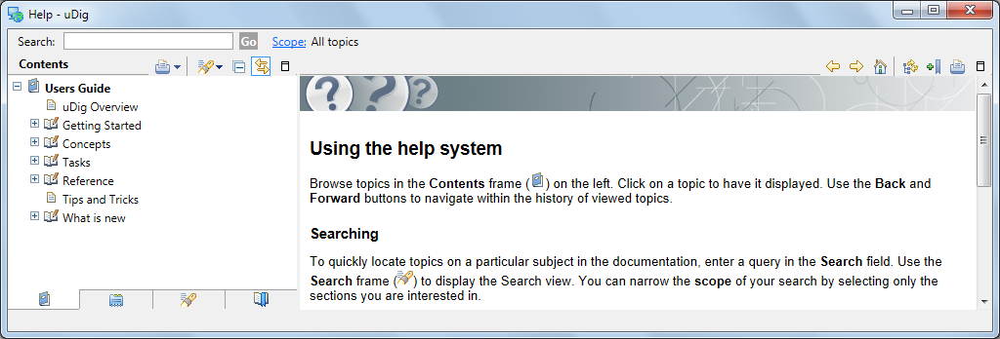
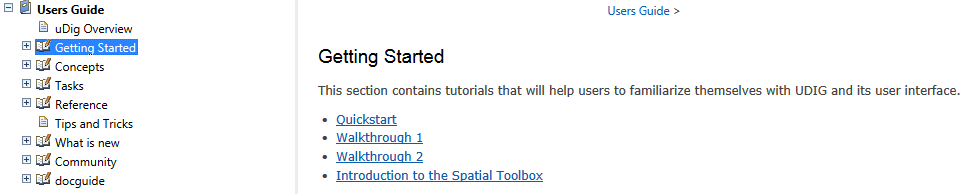
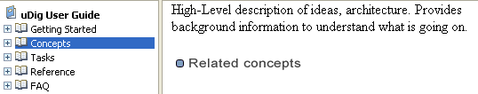
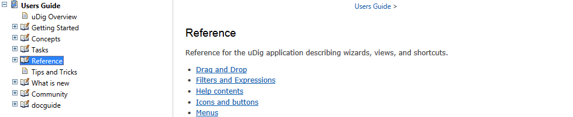

Online Documentation and Tutorials¶
In this section you will open up the online help and access reference information.
Hint
You can access the online help directly by pressing Getting Started on the welcome screen.
Open up the Help menu and select Help Contents

The windows firewall will need to allow the help application to startup.

This will bring up the online help system; the help system is a web application that makes use of a Contents tree to allow you to navigate between Pages.

The Contents tree organizes Pages into Books. Additional books are included as you install additional features.
Help Categories¶
You can access additional reference information in the following categories:
Getting Started: tutorials that will help familiarize yourself using uDig.

Concepts: High-Level description of ideas, architecture abd background knowledge.

Tasks: step by step instructions for performing specific actions and tasks in the application.

Reference: reference for the uDig application describing wizards, views, and shortcuts.
